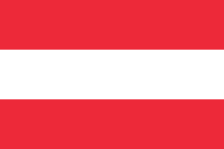
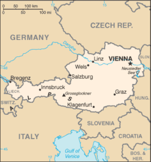

Itävalta (saks. Österreich), virallisesti Itävallan tasavalta (saks. Republik
Österreich), on sisämaavaltio Keski-Euroopassa. Se koostuu yhdeksästä
osavaltiosta. Itävallan naapurimaat ovat Liechtenstein ja Sveitsi lännessä,
Italia ja Slovenia etelässä, Unkari ja Slovakia idässä ja Saksa ja
Tšekki pohjoisessa.
Itävallan maiseman tunnusomaisia piirteitä ovat Alpit ja Tonava.

| Puhutut kielet = |
saksa |
| asukasmäärä = |
8 451 860 |
| rahayksikkö = |
Euro |
| BKT = |
364,9 mrd.USD |
luonto ja ilmasto
Itävallan eläimistö on tyypillisen keskieurooppalaista: jäniksiä, saksanhirviä,
fasaaneja, kettuja, mäyriä, näätiä ja peltopyitä. Vuoristoissa elävät muun muassa
gemssi, metsämurmeli, kotka ja naakka. Pannonian alueelle luonteenomaisia ovat
Neusiedl-järven ruoikoissa viihtyvät suuret määrät kahlaajalintuja.
Viime vuosina maan keski- ja eteläosien metsissä on jälleen tavattu joitakin karhuja.
Suurten korkeuserojen takia kasvillisuus on monimuotoista. Itävalta on Euroopan
metsäisimpiä maita. Tyypillisiä ovat lehtimetsät (tammi ja pyökki) ja sekametsät
(kuusi ja pyökki), korkeammalla myös havumetsät (kuusi, lehtikuusi ja mänty).
Alppiniittyjen kasvillisuus on erityisen värikästä ja vaihtelevaa: siellä
kukkivat alppitähti, katkerot, etelänarnikki, kanervat ja monet muut lajit.
Kartta ja kaupungit

Itävallan pääkaupunki on wien 1 741 246 asukasta.
Seuraavaksi suurimpia ovat Graz, Linz, Salzburg ja Innsbruck
Urheilu
Itävallan urheilu on tunnettu menestyksestä alppilajeissa: Toni Sailer,
Hermann Maier, Annemarie Moser-Pröll, Stephan Eberharter, Anita Wachter ja Benjamin Raich
ovat tunnettuja itävaltalaisia alppihiihtäjiä. Suosituin urheilulaji Itävallassa on kuitenkin jalkapallo.
Itävallan maajoukkue on pelannut jalkapallon MM-lopputurnauksessa seitsemän kertaa ja sen paras saavutus on pronssimitali vuodelta 1954. Jalkapallon
Euroopan-mestaruuskilpailuissa Itävalta on pelannut vain yhden kerran,
vuonna 2008, jolloin Itävalta järjesti lopputurnauksen yhdessä naapurimaansa
Sveitsin kanssa. Myös mäkihyppy on Itävallassa suosittua ja esimerkiksi
Thomas Morgenstern, Gregor Schlierenzauer, Andreas Kofler ja
Wolfgang Loitzl lukeutuvat maailman kärkihyppääjien joukkoon.
Itävallan jääkiekkomaajoukkue pelaa pääsääntöisesti 1. divisioonassa,
mutta nousee aina välillä pääsarjaan.
Visiitit pääsarjassa kestävät pääosin vain yhden turnauksen ajan.
Joukkueen IIHF-ranking sijoitus vuonna 2013 oli 15. Tästä huolimatta
joukkue on onnistunut saavuttamaan MM-pronssia vuosina 1931 ja 1947.